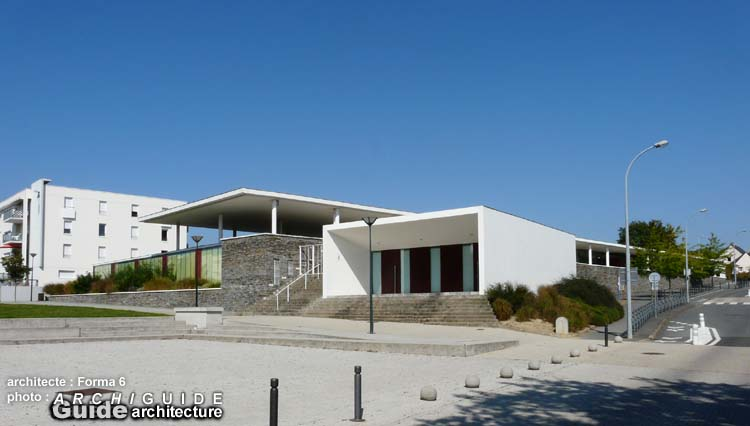
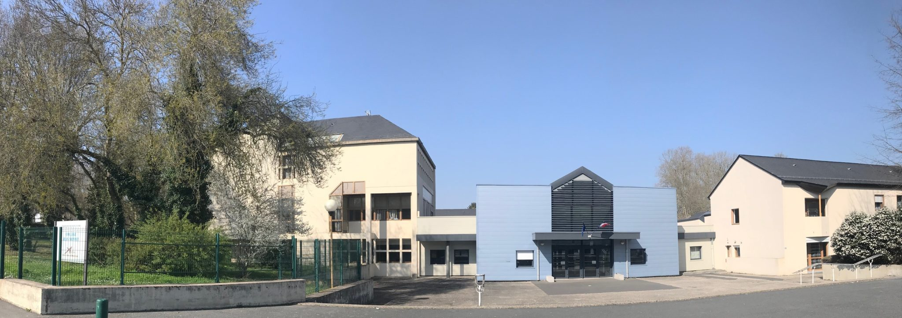
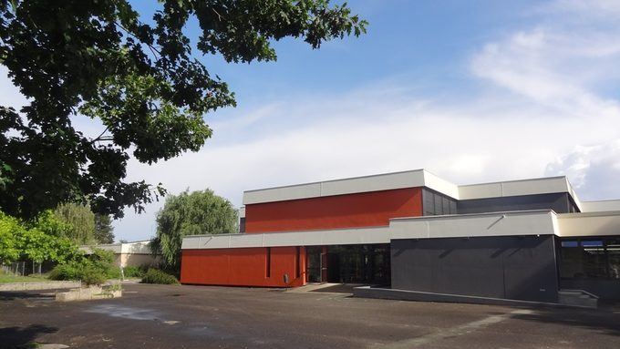
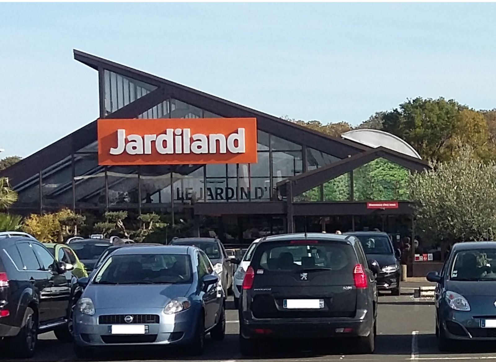

Voici les différents établissements scolaires que j'ai frequenté:
Ecole du bois de molière Angers (2006-2014) :
En savoir plus

Collège Jean Monnet Angers (2014-2018) :
En savoir plus

Lycée Henri Bergson Angers (2018-Aujourd'hui) :
En savoir plus

J'ai également réalisé un stage en entreprise dans le monde du Travail en 3e au Jardiland d'Angers

J'ai appris là bas à découvrir la rigueur du monde du travail à m'occuper des différents animaux (poules,lapins,rongeurs,oiseaux...), à mettre en rayon, à conseiller les clients...
Cependant, je ne compte pas m'orienter dans cette voie.
Projet professionnel :
Pour l'instant,je n'ai pas de projet professionel défini. Je compte passer un bac général et après je ne sais pas encore.